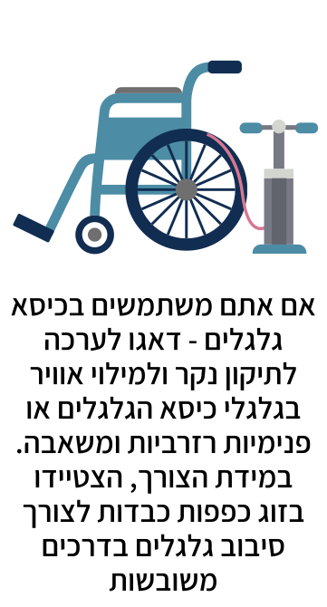
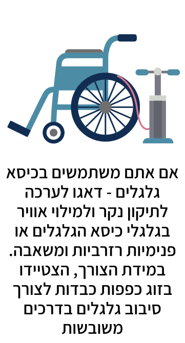

בחירה
והכנת המרחב המוגן


●●●●●●

●●●●
●●●●●●

●●

 

●●●●
• מומלץ לאחסן את הציוד בתוך תיק, אותו נוכל לקחת איתנו בעת הצורך. מומלץ
לספק קודם כל מענה לצרכים חיוניים - מים, מזון, תרופות ואמצעי תקשורת.
• יש להכניס לשקיות ניילון אטומות פריטים שחשוב שיישארו יבשים, כמו מסמכים וביגוד.
• חשוב לקחת בחשבון את הציוד הנוסף שנצטרך אם נתבקש לשהות זמן ממושך במרחב המוגן או להתפנות מהבית.
שימו לב: חשוב להתאים את הרשימה למאפיינים הייחודיים של בני הבית וצורכיהם.
• מומלץ לשתף את בני הבית בגיבוש רשימת הציוד לחירום, להציג בפניהם את תכולת התיק ואת מקום אחסונו,
לוודא שכל אחד יודע להשתמש בפריטים שבו.
• אם יש ממ"ד, יש לאחסן את הציוד לחירום כבר בתוכו. אם יש ציוד שצריך קירור או אחסנה במקום אחר,
חשוב לציין זאת בפני בני הבית ועל גבי התיק.
• חשוב לבצע תחזוקה שוטפת לציוד:
- החליפו את בקבוקי המים ובדקו את מלאי המזון ותוקפו מדי שלושה חודשים.
- בדקו את תקינות הסוללות והאמצעים האלקטרוניים האחרים אחת לחצי שנה.
- ניתן למנות אחראי על ביצוע בדיקות תקופתיות ותחזוקה שוטפת של התיק.

1. פינוי הדרך אל המרחב המוגן
יש לתכנן את דרך ההגעה למרחב המוגן ולפנות אותה ממכשולים, שעלולים לגרום לנפילות ולפציעות.
2. הוצאת חפצים וקיבוע ארונות
• יש להסיר ולהוציא מהמרחב המוגן פריטים שבירים כמו מראות ותמונות.
• יש לקבע ארונות ומדפים היטב לקירות הפנימיים באמצעות מיתדים (דיבלים).
• יש להסיר חפצים כבדים מהמדפים.
• אם המרחב המוגן שלנו הוא הממ"ד, בעת קבלת התרעה יש להיכנס אליו, לסגור את הדלת היטב באמצעות משיכת
הידית למעלה בזווית של 90 מעלות, ולוודא שהחלון סגור. דגשים חשובים:
דלת הממ"ד
• יש לוודא שהדלת נסגרת ונפתחת בקלות, שהידית שלה עולה כלפי מעלה ב-90 מעלות, שלא חודר אור ושאטמי
הגומי קיימים ולא התייבשו.
• אסור לפרק את דלת הממ"ד או לעשות בה שינויים. שימו לב - אם דלת הממ"ד הוסרה - יש להחזיר אותה
בהקדם.
• אין לפרק את ידית דלת הממ"ד מכיוון שהדבר עלול לפגוע במנגנון ובתפקוד הדלת וביעילותה בהגנה על חיי
אדם.
חלון הממ"ד
• במצב חירום, יש לוודא כי חלון הפלדה החיצוני וחלון הזכוכית הפנימי סגורים ונעולים עד לסיום מצב
החירום.
• אם מותקן חלון הזזה מזכוכית (דו-כנפי) יש להסירו ולהוציא אותו מחוץ למרחב המוגן.
• אם חלון הפלדה אינו נסגר היטב, יש לנקות מאבק את כיס ומסילת החלון.
שימו לב: אם נדרש תיקון בדלת או בחלון הממ"ד - יש לפנות ליצרן או לחברה המייצרת בתו תקן פריטי
מסגרות למקלטים.
סגירת מכסה צינורות האוורור
יש לסגור את מכסה הפלדה של צינורות האוורור בארבעה ברגים.
אם המרחב המוגן שלנו הוא המקלט, בעת קבלת התרעה יש להיכנס אליו ולסגור היטב את הדלת ואת פתח יציאת
החירום באמצעות משיכת הידית למעלה בזווית של 90 מעלות. דגשים חשובים:
• יש לוודא שהמקלט פנוי מציוד שאינו נדרש לשהייה בשעת חירום.
• יש לוודא כי דלת המקלט ויציאות החירום נסגרים ונפתחים כיאות. אם נדרש תיקון - יש לפנות לחברה
המייצרת בתו תקן פריטי מסגרות למקלטים.
• בחירום בלבד - יש לסגור את פתח האוורור באמצעות 4 ברגים.
• יש לתלות שלט ליד הכניסה למקלט עם הפרטים של המחזיקים במפתחות המקלט (שמות ומספרי טלפון).
• יש לסמן את הפתחים במקלט (דלתות, יציאות חירום, צינורות) בפס בצבע זוהר, ולתלות לידם שילוט עם
כיתוב "דלת כניסה", "דלת יציאה" או "יציאת חירום" בהתאמה.
• יש לוודא שאין חומרים דליקים או רעילים בקרבתו של המקלט. אם יש מיכלי גז במרחק של פחות מ-3 מטרים
מפתחי המקלט, יש לפנות בהקדם לחברה שמעניקה את שירות הגז ולדרוש את העתקתם.
• יש לוודא שמתקני התברואה נגישים ואינם נעולים.
• יש לוודא שיש אספקת מים תקינה בברזים בכיורים, במקלחות ובבתי השימוש.
• יש לוודא שתאורת החירום תקינה.
• יש לוודא שקיים סולם חירום פנימי וחיצוני.
שימו לב: האחריות לאחזקת מקלטים בבניינים משותפים ועל השמירה עליהם במצב המאפשר את השימוש בהם בכל
עת, חלה על הדיירים בכלל ועל ועד הבית בפרט. אכיפת חובה זו והבקרה על מימושה מוטלת על הרשויות
המקומיות.
אם המרחב המוגן שלנו הוא חלל פנימי שמוקף בכמה שיותר קירות ושכולל כמה שפחות חלונות ופתחים - בעת
קבלת התרעה יש לשבת צמוד לקיר פנימי, מתחת לקו החלונות ולא מול הדלת. ניתן לבחור גם במסדרון פנימי,
ולסגור את הדלתות והחלונות.
דגשים חשובים:
• יש לוודא שאין בחלל הפנימי קרמיקה, חרסינה או זכוכיות שעלולות להתנפץ, ואין לבחור במטבח, מקלחת או
שירותים לשמש כמרחב מוגן.
• יש לוודא שאין חומרים דליקים או רעילים בחלל הפנימי או בסמוך אליו.
מרחב מוגן תקני כולל מרחב מוגן דירתי (ממ"ד), קומתי (ממ"ק), או מוסדי (ממ"מ), או מקלט שניתן להגיע אליו בזמן ההתגוננות העומד לרשותנו. מיגונית וכל מבנה אחר אינם מרחב מוגן תקני.
רק אם אין ממ"ד, ממ"ק, ממ"מ או מקלט שניתן להגיע אליהם בזמן ההתגוננות העומד לרשותנו, יש להיכנס
לחדר מדרגות פנימי, ללא חלונות, פתחים וקירות חיצוניים.
בעת קבלת התרעה, יש לשבת על גרם מדרגות שיש מעליו לפחות שתי קומות, ולא בחלל הקומה.
בבניין בן שלוש קומות - יש לשהות בגרם המדרגות של הקומה האמצעית.
חדר מדרגות פנימי בנוי מבטון יצוק. הוא נמצא במרכזו של הבניין ומוקף בדירות, ולכן מהווה את השלד
ו"עמוד השדרה" של הבניין.
עובדה זו מקנה לו עמידות וחוזק רבים יותר משאר חלקי הבניין. בנוסף, רצפת הבטון מתחתינו והתקרה
שמעלינו מספקות לנו הגנה, מונעות פגיעה מרסיסים ומאטות את ההדף.
יש לבחור את המרחב המוגן בהתאם ליכולת להגיע אליו בזמן ההתגוננות העומד לרשותנו.
עם זאת, אם ניתן להגיע למקלט דרך חדר מדרגות פנימי, ניתן להמשיך ולרדת למקלט ללא תלות בזמן
ההתגוננות.
אם קיים קושי בהגעה למקלט, יש לשבת בגרם חדר המדרגות שיש מעליו שתי קומות לפחות (בבניין
בן שלוש קומות - יש לשהות בגרם המדרגות של הקומה האמצעית).
ככל שיש יותר קירות שחוצצים בינינו לבין הסביבה החיצונית, יורד הסיכוי שניפגע מהדף ומרסיסים. מכיוון
שהרסיסים עפים כלפי מעלה, עלינו לשבת מתחת לקו החלונות.
בנוסף, אין לשהות מול הדלת מכיוון שרסיסים והדף עלולים לחדור בעדה ולפגוע בנו.
המטבח, השירותים והמקלחת הם מקומות מסוכנים ואין לבחור בהם כמרחב מוגן בתוך הבית.
חניון תת קרקעי יכול לשמש כמרחב מוגן רק אם אין או שלא נוכל להגיע בזמן ההתגוננות העומד לרשותינו
לממ"ד, ממ"'ק, מקלט, חדר מדרגות פנימי או חלל פנימי בעל כמה שפחות קירות חיצוניים, חלונות
ופתחים.
שימו לב: יש להתרחק ממכוניות עד כמה שניתן ולהיצמד לקיר פנימי.
עמידה בסמוך לחלון סגור, חושפת אותנו לפגיעת רסיסים והדף. זכוכית החלון עלולה להתנפץ ולפגוע בנו, גם אם אנחנו נמצאים במרחק גדול, אפילו של עשרות מטרים ממקום הפיצוץ.
אם מתקבלת התרעה בעת שהייה במבנה שאינו כולל תקרת בטון ו-4 קירות מבטון או מבלוקים, לרבות בנייה
קלה, מבנה יביל, קרוואן ומבנה מגבס או מעץ, יש לצאת מהמבנה ולהיכנס למרחב מוגן בזמן ההתגוננות העומד
לרשותינו.
אם לא ניתן להיכנס למרחב המוגן בזמן ההתגוננותיש לצאת מהמבנה, לשכב על הקרקע ולהגן על הראש
באמצעות הידיים.
בכפוף לקבלת היתר בנייה מוועדת התכנון המקומית, כל אזרח רשאי לרכוש לעצמו מיגון פרטי מכל סוג ולהציב
בשטחו.
חשוב לציין כי פיקוד העורף אינו ממליץ להסתמך על מיגונית כמיגון עיקרי, מכיוון שהיא אינה מהווה
מיגון תקני, אלא מיועדת בעיקר לשהייה ארעית של עוברי אורח במרחב הציבורי.